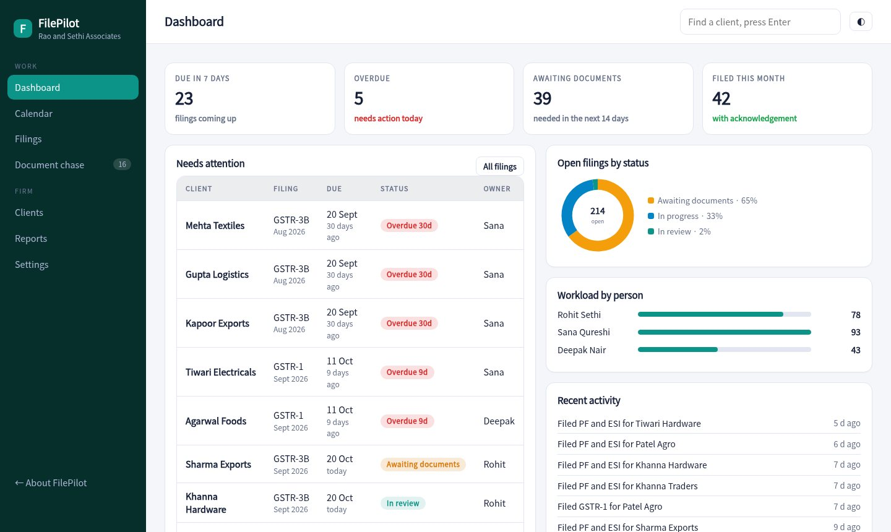
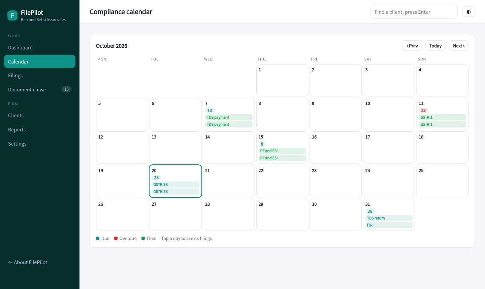
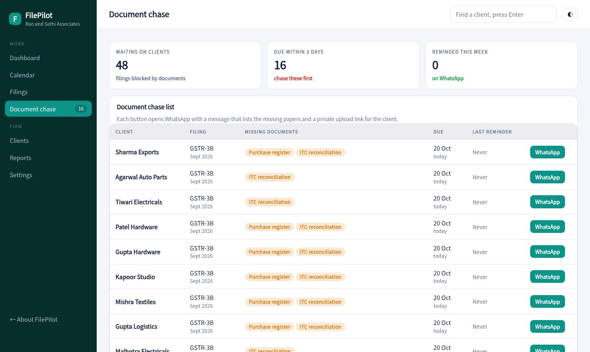
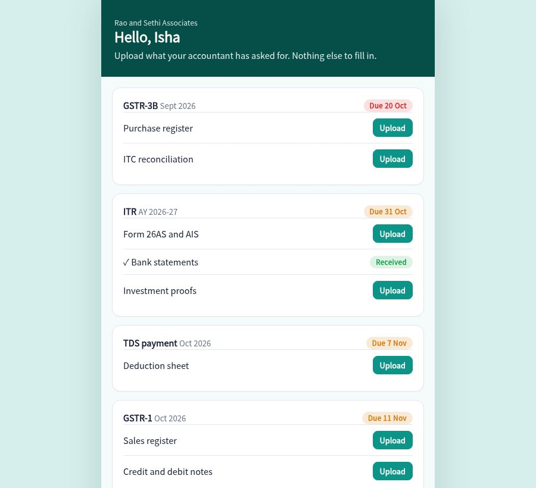

FilePilot builds the GST, TDS, PF, advance tax, ITR and ROC calendar for each client, shows who is waiting on whom, and chases missing documents so returns go out on time.

Add a client and tick the services you handle. GSTR-1, GSTR-3B, TDS, PF and ESI, advance tax, ITR and ROC dates are created for you.
Move each filing from awaiting documents to in progress, in review and filed. See what each person is carrying.
One tap opens a message listing the missing papers with a private upload link. The list shows who has been reminded and when.
Clients open their link, see what is needed and upload it. Your board updates as soon as they do.
Mark a return filed and the acknowledgement number is kept with it, ready when the client asks.
See which overdue filings carry a per-day fee and roughly how much, so you can decide what to chase first.
Filings due this week, anything overdue, what is blocked on documents and what was filed this month.
Every due date across all clients, with overdue days marked in red. Tap a day to see who is affected.

A single list of filings held up by missing documents, ordered by due date, with a WhatsApp button on each row.

Each client gets a simple page that lists exactly what you need. They upload, and you see it.

Enter each client and tick the services you handle. Their due dates appear on the calendar.
Assign filings, move them along and mark them filed with the acknowledgement.
Send WhatsApp reminders for missing papers and review late fee exposure each week.
Sample pricing for this concept build.
The dates follow the usual statutory calendar. Extensions and notifications change them every year, so a live build lets you edit the rules and override a date for one client.
In the demo the portal notes the file name and marks the document received, but nothing leaves the browser. A live build stores files safely against each client.
No. It tracks the work, the documents and the acknowledgement. Filing still happens on the government portals.
No. Clients, PAN numbers and filings are generated for a made-up firm.
Open the client portal, upload a sample document, then look at the chase list in the tracker.
Open the tracker